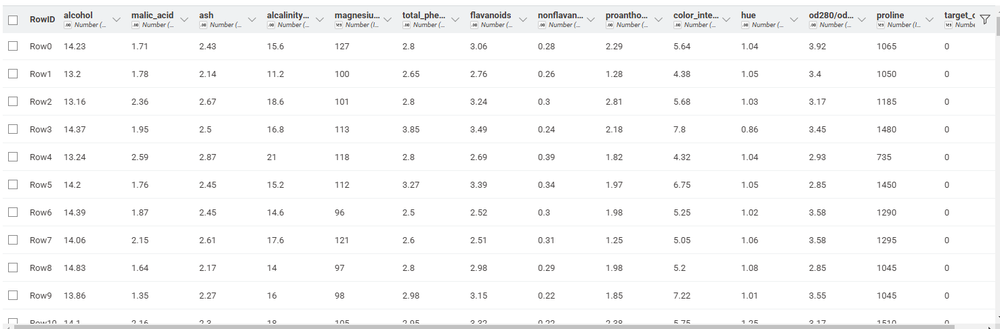
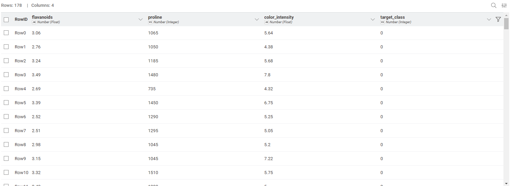
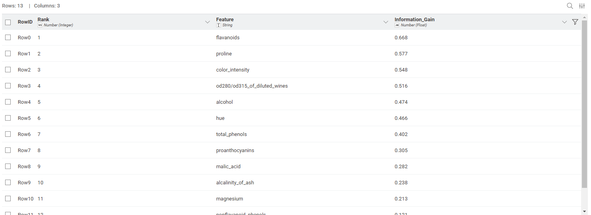

pertemuan 6#
Pelatihan Sain Data Untuk Bisnis: Seleksi Fitur - Information Gain#
Seleksi Fitur#
Seleksi fitur adalah proses memilih sebagian fitur (atribut) sesedikit mungkin dan memenuhi kebutuhan analisis (masih informatif).
Tujuan utama dari seleksi fitur meliputi:
Menghilangkan fitur yang kurang relevan.
Menghilangkan fitur yang redundan.
Memilih Fitur dengan Information Gain#
Information Gain merupakan metode mengukur seberapa baik suatu fitur memisahkan data ke dalam kelas-kelas target yang berbeda, dengan memanfaatkan konsep dari teori informasi (information theory), khususnya entropi.
Konsep Entropi:
Entropi mengukur tingkat ketidakpastian atau kekacauan dalam suatu dataset.
Entropi tinggi: Data sangat bercampur (banyak kelas berbeda).
Entropi rendah: Data homogen (hampir semua data milik satu kelas).
Rumus Information Gain#
Berdasarkan rumus, berikut adalah persamaan matematis yang digunakan dalam perhitungan Information Gain:
1. Information Gain \(IG(D, A) = H(D) - H(D|A)\)
H(D): Entropi awal dataset sebelum pemisahan.
H(D|A): Entropi rata-rata setelah membagi dataset berdasarkan fitur A.
2. Entropi \(H(D) = - \sum_{i=1}^{k} p_i \log_2(p_i)\)
p_i: Proporsi sampel di kelas i dalam dataset D.
k: Jumlah kelas.
3. Entropi Bersyarat \(H(D|A) = \sum_{v \in \text{nilai}(A)} \frac{|D_v|}{|D|} \cdot H(D_v)\)
D_v: Subset data di mana fitur A bernilai v.
|D_v| / |D|: Bobot proporsional dari subset tersebut.
Metode Filter/Seleksi Fitur Lainnya#
Selain Information Gain, terdapat beberapa metode filter lainnya untuk seleksi fitur:
Berbasis Korelasi: Menghapus atribut redundan menggunakan heuristik. Parameter yang digunakan meliputi:
\(r_{ci}\): Korelasi rata-rata dari atribut target dengan semua atribut lain dalam himpunan tersebut.
\(r_{ii}\): Korelasi rata-rata antar atribut (attribute-attribute) di antara berbagai atribut (kecuali atribut target).
\(k\): Jumlah atribut.
Berbasis Missing Values: Menfilter fitur dengan menghapus atribut yang memiliki rasio missing values lebih besar dari batas ambang.
Berbasis Variance: Menfilter fitur dengan menghapus atribut yang memiliki variansi lebih rendah dari batas ambang.
mencoba#
kode python untuk import wine dataset dari sklearn
import pandas as pd
from sklearn.datasets import load_wine
wine_data = load_wine()
df_wine = pd.DataFrame(data=wine_data.data, columns=wine_data.feature_names)
df_wine['target_class'] = wine_data.target
df_wine.to_excel('wine_dataset.xlsx', index=False)
print("File wine_dataset.xlsx berhasil dibuat!")

kode pythonimport pandas as pd
from sklearn.feature_selection import mutual_info_classif
# Load data from KNIME (sekarang ini adalah data Wine)
df = input_table_1.copy()
# Pisahkan features (X) dan target (y)
# Asumsi: kolom terakhir adalah target class
target_column = df.columns[-1]
X = df.drop(columns=[target_column])
y = df[target_column]
# Ubah tipe data target menjadi integer SEBELUM dimasukkan ke fungsi
y = y.astype(int)
# Calculate Information Gain sesuai materi (Mutual Information setara dengan IG)
info_gain = mutual_info_classif(X, y, random_state=42)
# Buat DataFrame hasil
result_df = pd.DataFrame({
'Feature': X.columns,
'Information_Gain': info_gain
})
# Sort by Information Gain (descending) untuk melihat entropi yang paling banyak berkurang
result_df = result_df.sort_values('Information_Gain', ascending=False).reset_index(drop=True)
# Tambahkan ranking
result_df.insert(0, 'Rank', range(1, len(result_df) + 1))
# Ambil 3 fitur tertinggi
top_3_features = result_df.head(3)['Feature'].tolist()
# OUTPUT 1: Data dengan HANYA 3 fitur tertinggi + target
output_columns = top_3_features + [target_column]
output_table_1 = df[output_columns]
# OUTPUT 2: Tabel peringkat semua fitur berdasarkan Information Gain
output_table_2 = result_df

